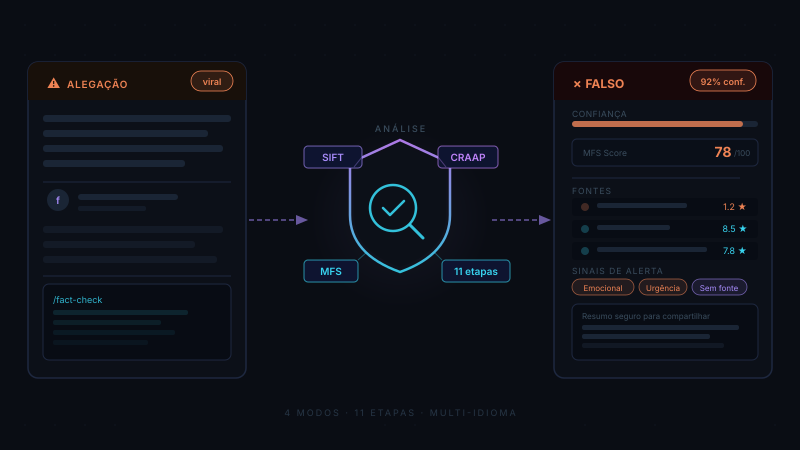

Fact-Check
Sistema semi-automatizado de verificação de fatos, detecção de desinformação e letramento midiático. Gera cards HTML visuais com veredicto, pontuação MFS (Manipulation & Falsehood Score), credibilidade de fontes e componente educacional. Combina a metodologia SIFT, o teste CRAAP e ciência de prebunking em um pipeline de 11 etapas com busca multi-idioma e rastreamento de origem.

↓ Baixar e instalar
Instalação global (disponível em todos os seus projetos):
git clone https://github.com/petar-nauka/fact-check-skill.git ~/.claude/skills/fact-check
Ou instalação apenas no projeto atual (execute na raiz do projeto):
git clone https://github.com/petar-nauka/fact-check-skill.git .claude/skills/fact-check
Para usar no Claude.ai, faça upload do arquivo fact-check.skill nas configurações de skills — sem necessidade do Claude Code:
curl -LO https://github.com/petar-nauka/fact-check-skill/raw/main/fact-check.skill
~ equivale a %USERPROFILE%
(ex.: C:\Users\seu-usuario\.claude\skills\fact-check).
O repositório inclui dois arquivos essenciais — SKILL.md e
educational-tips.md — e o git clone baixa ambos automaticamente.
Após instalar, reinicie o Claude Code para a skill ser carregada.
⚙ Funcionalidades
A skill recebe uma afirmação (texto, URL ou imagem), executa um pipeline de 11 etapas — decomposição de afirmação, busca multi-idioma, leitura lateral, rastreamento de origem, detecção de sinais de alerta e pontuação MFS — e entrega um card HTML completo com veredicto, fontes avaliadas e lição educacional.
Pipeline de 11 etapas
Decompõe a afirmação em sub-alegações verificáveis, busca fontes em múltiplos idiomas, aplica leitura lateral (protocolo Stanford COR 2023), rastreia a origem do conteúdo e detecta 40+ sinais de alerta em 6 categorias.
4 modos de operação
Standard (card HTML completo), Comparação (dois artigos/URLs lado a lado), Prebunking (briefing de narrativas falsas ativas sobre um tema) e Verificação Rápida (resposta texto, sem HTML).
Score MFS
Manipulation & Falsehood Score: fórmula ponderada de 3 componentes — CFS (50%), MTS (30%) e SCD (20%) — com escala de 6 níveis de 0 a 100: Confiável → Enganoso → Desinformação.
Componente educacional
Ensina o usuário a verificar por conta própria: mini-aulas de reconhecimento de técnicas de manipulação, protocolo de leitura lateral e 5 perguntas essenciais para avaliar qualquer fonte.
Multi-idioma
Busca fontes no idioma mais relevante para a afirmação: inglês, idioma local e idioma de origem do conteúdo. Suporte nativo a inglês, búlgaro e russo, com adaptação para outros idiomas por inferência.
Output HTML + fallback
Cards visuais com tema dark/light, responsivos, compatíveis com impressão e WCAG AA. No Claude.ai sem acesso à web, opera em modo fallback com conhecimento interno e sinaliza explicitamente a limitação.
★ Dicas
- 📋Contexto completo acelera o rastreamento: ao verificar um post viral, cole o texto integral (incluindo cabeçalho, data visível e URL de origem, se houver) — quanto mais contexto, mais preciso o rastreamento de origem na Etapa 4.
- ⚖Modo Comparação é automático: não é preciso especificar o modo — passe dois URLs ou dois blocos de texto com linguagem comparativa ("compare estas fontes", "qual é mais confiável") e a skill detecta a intenção e usa o Modo 2.
- 🛡Prebunking antes de eventos críticos: "Quais falsas narrativas circulam sobre as eleições em X?" ou "Que desinformações existem sobre Y?" ativam o Modo 3 — receba um briefing preventivo das campanhas de desinformação ativas antes que cheguem até você.
- ⚡Verificação rápida para perguntas diretas: para verificações urgentes, faça uma pergunta direta ("É verdade que X?") — a skill detecta automaticamente e usa o Modo 4: resposta em texto sem gerar HTML, mais rápido para decisões no momento.
- 🌐Funciona no Claude.ai sem ferramentas web: sem acesso a ferramentas de busca, a skill usa conhecimento interno e indica explicitamente quando está em modo fallback — útil para verificações rápidas de afirmações históricas ou científicas consolidadas.
▶ Uso na prática
Invoque com /fact-check e forneça o conteúdo a verificar — a skill detecta o modo automaticamente:
/fact-check Vi este post circulando no WhatsApp: "URGENTE: O governo vai bloquear transferências PIX acima de R$ 200 a partir de julho. Compartilhe antes que apaguem! Fonte: Banco Central" É verdade?
Para comparar dois artigos sobre o mesmo tema:
/fact-check Compare estas duas coberturas sobre os efeitos da cafeína na saúde: https://exemplo-site-1.com/artigo-cafeina https://exemplo-site-2.com/estudo-cafeina Qual é mais confiável?
Para receber um briefing de desinformações ativas antes de um evento:
/fact-check Quais falsas narrativas estão circulando atualmente sobre vacinas contra a gripe no Brasil? Quero me preparar para identificá-las.
"A NASA confirmou que haverá 3 dias de escuridão total em dezembro de 2026. Cientistas pediram para estocar alimentos e velas. COMPARTILHE ANTES QUE DELETEM!"
✗ FALSO — Confiança: 96% MFS Score: 82/100 (Desinformação) Sinais de alerta: urgência artificial, apelo emocional, autoridade falsa (NASA), chamada para compartilhar antes de "deletar" Fontes verificadas: nasa.gov (9.1★), snopes.com (8.8★), sciencealert.com (8.5★)